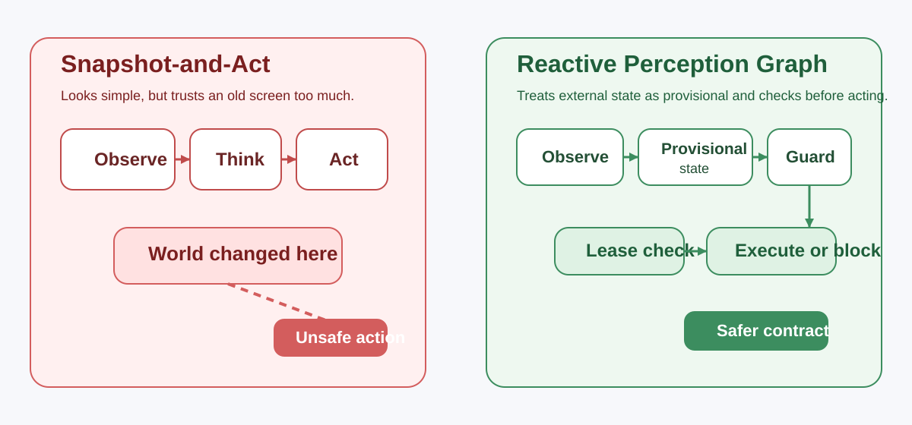

A safer way for LLM agents to touch the outside world
desktop-touch-mcp is a Windows computer-use MCP server that gives LLM agents eyes, hands, and a better safety contract with dynamic interfaces.
It runs on Windows 10 and 11, and lets LLMs interact with Windows applications through screenshots, keyboard, mouse, Windows UI Automation, and Chrome DevTools Protocol.
But the deeper goal is not just “look at a screenshot and click some coordinates.” This project is exploring how LLM agents can interact with changing interfaces in a way that is more semantic, more bounded, and less fragile.

Windows 10 and 11. Not multi-OS.
This is a Windows-only project: it drives the desktop through Win32, Windows UI Automation, and Chrome DevTools Protocol, so the examples, screenshots, and client setup flow are all Windows-first. macOS and Linux are not supported.
Not a bigger tool catalog. A different contract with the world.
desktop-touch-mcp is a Windows MCP server that exposes screenshots, keyboard and mouse input, Windows UI Automation, Chrome DevTools Protocol, and related desktop-control tools.
How should an LLM agent interact safely with an external world that may already have changed while it was thinking?
Want to try it first?
The quickest way to install and launch the runtime is:
npx -y @harusame64/desktop-touch-mcp
On first run, the launcher downloads the matching Windows runtime from GitHub Releases, verifies it, and caches it locally.
Stable enough for daily work, and still moving.
In daily use
32 tools, a native Rust engine, and regular releases. The project is used every day to drive real Windows applications — Notepad, Excel, Chrome, Windows Terminal, and whatever else is on the machine.
Evolving release to release
The newer surfaces — discover-then-act targeting, browser semantic targeting, Key Locker, multi-monitor capture — keep gaining capability. Each release notes what changed for you.
Evaluation still open
Systematic benchmarking of the ideas behind the design is still being built out. The evaluation plan is public rather than implied.
Project Milestones
As the project evolves, we document major architectural shifts and milestones here.
v1.16: Scrolling That Reaches WebView Apps, and Means What It Says
Apps built with Tauri, Electron, WebView2 and CEF host their page inside nested child windows, often in a separate process, so the wheel went to the outer window, which ignored it — scroll reported success and nothing moved. It now finds the window that actually receives the wheel, with no per-framework configuration, and never searches outside the window you targeted. One amount unit also finally means one wheel notch on every path: on windows that expose no scroll position it had been sending a fortieth of a notch, so the default amount:3 moved about seven pixels and looked broken. Ten notches now move roughly one screenful — the exact distance is still the app's own decision, as it is for a real mouse. And on windows that draw their own scrollbar, scroll compares the window's pixels before and after, so a call can report delivered instead of always coming back unverifiable. The amount change is breaking: divide any value you had inflated to compensate by 40.
v1.15: A Closed Window Stops Catching Your Clicks
When an app you had been working with went away, its last known rectangle stayed in the window cache and kept claiming clicks — so a click was either refused as "outside the target window" or quietly delivered to whatever now occupied that part of the screen, and restarting the server was the only reliable cure. Cached windows now expire, a window that stops reporting a position is dropped at that moment, and an expired entry means "check again" rather than "unreachable". A click that names a window is refused when the point turns out to be inside a different application's window, and the response says which window is actually there — it used to be delivered and reported as success. In the same release, keyboard writes (type / press / sequence) started requiring a destination: a call that names no window now stops with a typed error before any key is sent, instead of landing in whatever window happened to be in front. The launcher also stops waiting forever on an unreachable GitHub: the release lookup and the download now give up after 15 seconds of silence, and DESKTOP_TOUCH_MCP_OFFLINE_FALLBACK=1 starts an already-installed release instead of failing.
v1.14: An Emergency Stop You Can Trust, and Captures on Every Monitor
The failsafe corner had no lower bound, so on a desktop with a monitor left of or above the primary one the trigger zone silently expanded into a full-width or full-height band across it — parking the cursor on a title bar could kill the server. The corner is now the top-left of the primary monitor only; the stop exits the server only while a tool call is running, and an idle session refuses new calls instead of tearing down a connection that stdio cannot re-establish; and a trigger is always written to the diagnostic log, with a Windows notification whenever the server exits or refuses a call. The same series makes screenshot(displayId=…) and screenshot(region=…) work on every monitor, negative coordinates included, moves the clipboard onto a native path that is faster and no longer trips antivirus heuristics, and removes a hidden quadratic cost that made large payloads crawl.
v1.13: Multi-Monitor, and Clicks That Refuse Rather Than Land Elsewhere
desktop_act stopped refusing visually-found elements just because their window was not the focused one — on a multi-monitor desktop that check compared the element against whatever happened to be in the foreground, so plainly visible elements came back entity_outside_viewport. A minimised or hidden window now reports origin_window_not_visible, whose recovery actually works, instead of advice to scroll that never could. Mouse input reaches every connected monitor, including ones placed left of or above the primary: the underlying library used to pull such a point into the primary monitor and click whatever sat there while reporting success. When a click genuinely cannot be delivered it now fails with CoordinateOutsideReachableBounds or CursorPlacementBlocked, and clicks nothing.
v1.12: Key Locker — the Terminal Autofills Your Passwords
Running ssh or sudo normally stops at a hidden password prompt an agent can't safely type into. The new key_locker tool stores SSH key passphrases and sudo / login passwords encrypted on your machine (Windows DPAPI) and fills them in when a bound command reaches its prompt — the secret is entered once into the locker's own secure dialog and is never shown to the assistant. Autofill only fires in a console opened by key_locker(action='launch_console'), a classic visible console the human can take over at any prompt, and every fill asks for confirmation by default. The returned paneId also gives terminal a title-change-proof way to keep driving the same pane through an ssh login (32 tools total).
v1.11: Screenshots That Cost Less and See More
Screenshots stop inlining their pixels into every response: screenshot (and the Set-of-Mark, diff, scroll, workspace, and desktop_act crop results) now return a cheap screenshot://by-ref/{id} link to an image saved on disk, so routine look-act-confirm loops cost a fraction of the tokens — pixels are spent only when the link is opened. A Windows.Graphics.Capture path lets GPU-rendered and occluded windows return real pixels instead of black, with a captureBlocked signal when content genuinely can't be captured, and two new tools — screenshot_query and screenshot_gc (31 tools total) — inspect and prune the self-bounding cache.
v1.10: A Visual-Only Act That Confirms Itself
On a target the accessibility tree can't describe — Electron, PWA, game, custom canvas, Remote Desktop — a successful desktop_act can bundle a roiCapture: a PNG crop of just the region that changed plus a lease-less preview of the controls now visible there. It folds "act → desktop_state → screenshot" into a single call. On by default for a visible change; returnCapture:"never" suppresses it. Never attached on structured targets, where desktop_state is cheaper and exact.
v1.9: Semantic Targeting Reaches the Browser
browser_click and browser_fill can target an element by what it means (by:'text'|'role'|'ariaLabel' + a pattern), resolving to a single actionable target and stopping — not guessing — when the match is ambiguous. The browser also learns to tell a real modal dialog from a navigation drawer: browser_overview reports a machine-readable modal state and browser_click refuses to click through a blocking dialog onto its backdrop. "See entities, not coordinates," applied to the web.
v1.8: From Delivery to Completion, and Reaching Deeper Into Apps
Trustworthy delivery extends into trustworthy completion: terminal(action='run') can wait for a command to finish and report its real exit code, the new excel tool runs VBA over COM, and the act-and-observe loop gains race-free visual verification, idle-aware CPU dormancy, a diagnostic log, and a deliberate-dwell emergency stop.
v1.4: From Observation to Memory and Trustworthy Delivery
Four cognitive memory layers the agent can re-query (working, episodic, semantic, procedural) plus delivery verification that closes the silent-failure paths in browser, terminal, and keyboard sends. Plus typed error codes for refusals and a new opt-in foreground_flash channel for Windows Terminal.
v1.2: Putting Meaning Into the Response
The same 28 tools, but every response can now carry its own sense of time (as_of), engine confidence, and causal context — opt-in via the new include argument. Existing callers stay byte-for-byte compatible.
v1.0: Less Surface, More Meaning
A significant consolidation of the tool surface (65 → 28 tools) and the transition to World-Graph and Auto-Perception as the default interaction model.
Most GUI agents trust the world for too long.
Many agents still follow a simple loop:
observe think act
On a real desktop, that is often enough to fail:
- another window comes to the front
- a modal dialog appears
- a button moves
- the target element disappears
So the problem is not only whether the model is intelligent enough. The problem is also whether it is acting on assumptions that are already stale.
Meaning-first interaction instead of positional guesswork.
This project publicly describes one of its guiding ideas as Beyond Coordinate Roulette. The phrase points at a familiar failure mode in UI automation: the interface is treated as a flat picture, and action becomes a positional guess.
flowchart TB
subgraph A["Coordinate roulette"]
A1["Looks clickable"]
A2["Guess position"]
A3["Wrong target"]
A1 --> A2 --> A3
end
subgraph B["Beyond Coordinate Roulette"]
B1["See entities"]
B2["Affordances"]
B3["Lease trust"]
B4["Guard action"]
B5["Semantic diff"]
B1 --> B2 --> B3 --> B4 --> B5
end
A3 -. "move beyond this" .- B1
classDef old fill:#fde2e2,stroke:#c0392b,color:#5c1f1f;
classDef new fill:#e8f1ff,stroke:#3b6db3,color:#183257;
class A1,A2,A3 old;
class B1,B2,B3,B4,B5 new;
Four recurring design moves.
Provisional state
Do not keep observed state as timeless truth. Keep it as something that is probably true for now.
Leased trust
Do not trust a target forever. Trust it through a short-lived lease.
Guarded action
Before acting, check whether the assumptions behind the action are still valid.
Demand-driven perception
Do not pay for expensive perception on every step. Escalate only when the situation demands it.
Reactive Perception Graph
One concrete expression of these ideas is the Reactive Perception Graph (RPG). RPG keeps external state provisional, tracks when that state becomes dirty or stale, and evaluates safety checks before an action is allowed to fire.
Screenshots are not truth.
flowchart LR
subgraph A["Snapshot-and-Act"]
A1["Observe screen"]
A2["Think"]
A3["Act on old assumption"]
A1 --> A2 --> A3
AX["World changed"] -.-> A3
end
subgraph B["Reactive Perception Graph"]
B1["Observe target"]
B2["Store provisional state"]
B3["Dirty / stale signals"]
B4["Validate lease"]
B5["Run guards"]
B6["Execute or block"]
B1 --> B2 --> B3 --> B4 --> B5 --> B6
end
A3 --> C["Unsafe action"]
B6 --> D["Safer action contract"]
classDef bad fill:#fde2e2,stroke:#c0392b,color:#5c1f1f;
classDef good fill:#e5f6ea,stroke:#2e8b57,color:#123d28;
class C bad;
class D good;
Where to go next
v1.10 Milestone
Targeting by meaning and confirming in one call: browser semantic targeting, and a visual-only act that returns a changed-region crop plus next-target preview.
RPG explainer
A diagram-heavy walkthrough of why stale assumptions matter and how RPG responds.
Beyond Coordinate Roulette
The philosophy piece behind entity-first, meaning-first UI interaction.
Questions, bugs, or ideas? Start with GitHub.
I am not publishing a direct contact email on this site. If you found a bug, hit an integration problem, or want to discuss the direction of the project, the best path is GitHub.